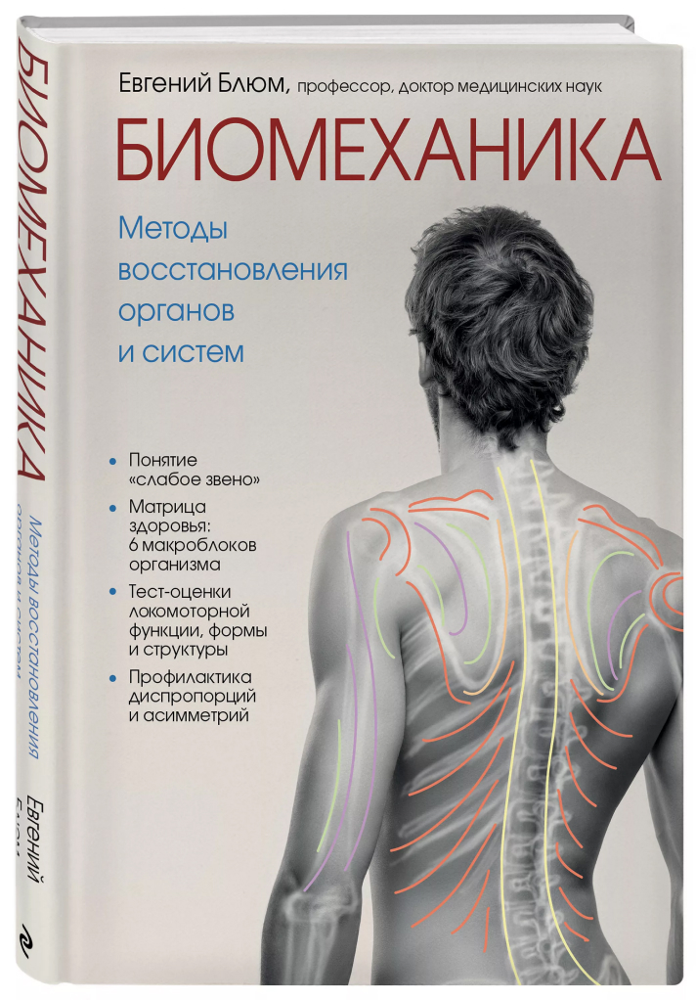

Книга Доктора Блюма «Биомеханика».
Книги

Книга Доктора Блюма «Бимеханика».
Книга профессора, д.м.н. Евгения Блюма "Биомеханика. Методы восстановления органов и систем".
Цель этой книги увидеть за внешней оболочкой тела органы и системы жизнеобеспечения, понять как и при каких условиях они работают надежно и долговечно, а при каких неизбежно и закономерно будут давать сбой.
Центр биомеханики Доктора Блюма в Испании предлагает восстановление здоровья без медикаментов и операций.
В Центре проводится биомеханическое тестирование и разрабатываются персональные
обще-оздоровительные программы: